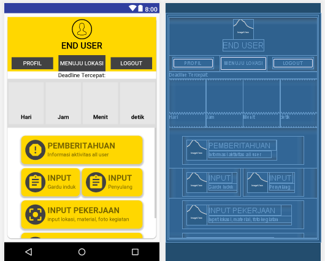
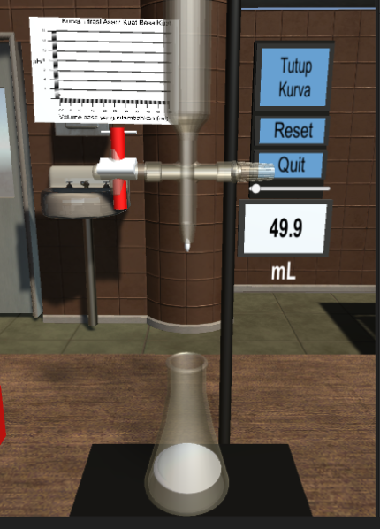

I am a passionate software developer with expertise in multiplatform application development.
|  |
Project APRTCreating a real-time monitoring application for workers in the field can greatly improve efficiency, productivity, and accountability. Such an application would require various features and technologies to effectively track deadlines, tools, work progress, and other relevant data. Here's a high-level overview of how you can design and develop such an application: |
|  |
Titration-Hand Gesture sensorA Titration Hand Gesture Sensor with a virtual laboratory is a concept that combines technology and science education to enhance the process of titration, a common technique in analytical chemistry. This system would employ a hand gesture sensor and a virtual lab environment to teach and practice titration without the need for physical chemicals and equipment. Here are some features and a description of how this system might work: |